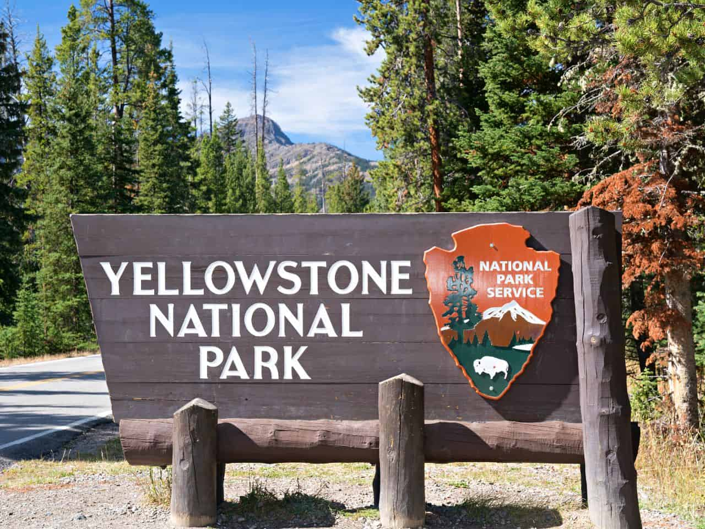

Descripción del País:

Estados Unidos es un país ubicado en América del Norte, con límites al norte con Canadá, al sur con México, al este con el océano Atlántico y al oeste con el Pacífico. Su capital es Washington, D.C. El país es conocido por su influencia cultural, política y económica a nivel mundial. Cuenta con una población diversa debido a su historia de inmigración. Geográficamente, tiene paisajes variados, desde montañas y bosques hasta desiertos y costas. La economía de Estados Unidos es una de las más grandes del mundo y tiene un papel importante en la tecnología, la ciencia y las finanzas. Además, el país es una potencia militar destacada.
5 LUGARES PARA IR DE VACACIONES EN U.S.A.
1. Parque Nacional de Yellowstone
Ubicado en los estados de Wyoming, Montana y Idaho, Yellowstone es el primer parque nacional del mundo. Conocido por sus géiseres, fuentes termales, y una rica vida silvestre, como bisontes y osos pardos, ofrece oportunidades únicas para hacer senderismo y observar la naturaleza.
2. Nueva York, Nueva York

Nueva York es conocida como "la ciudad que nunca duerme" y es un destino vibrante para todos los gustos. Desde icónicos rascacielos como el Empire State Building hasta museos de clase mundial como el MoMA, pasando por la Estatua de la Libertad y Central Park, hay mucho que explorar en esta metrópoli.
3. San Francisco, California

San Francisco es famosa por el puente Golden Gate, los tranvías históricos, y la isla de Alcatraz. La ciudad es conocida por su diversidad cultural, su escena culinaria innovadora, y sus pintorescas calles empinadas.
4. Parque Nacional del Gran Cañon

El Gran Cañón en Arizona es una maravilla natural que ofrece vistas impresionantes y una variedad de actividades al aire libre como senderismo, rafting en el río Colorado, y observación de aves. Sus formaciones rocosas únicas y vistas panorámicas lo convierten en un destino inolvidable.
5. Las Vegas, Nevada

Las Vegas es conocida por sus brillantes luces, casinos, y su vibrante vida nocturna. Además de los espectaculares hoteles temáticos y espectáculos de clase mundial, Las Vegas ofrece una amplia gama de actividades como compras, cenas en restaurantes de renombre, y entretenimiento para todos los gustos. También es una excelente base para visitar otros lugares cercanos como el Parque Nacional del Valle de la Muerte y el Parque Nacional del Gran Cañón.